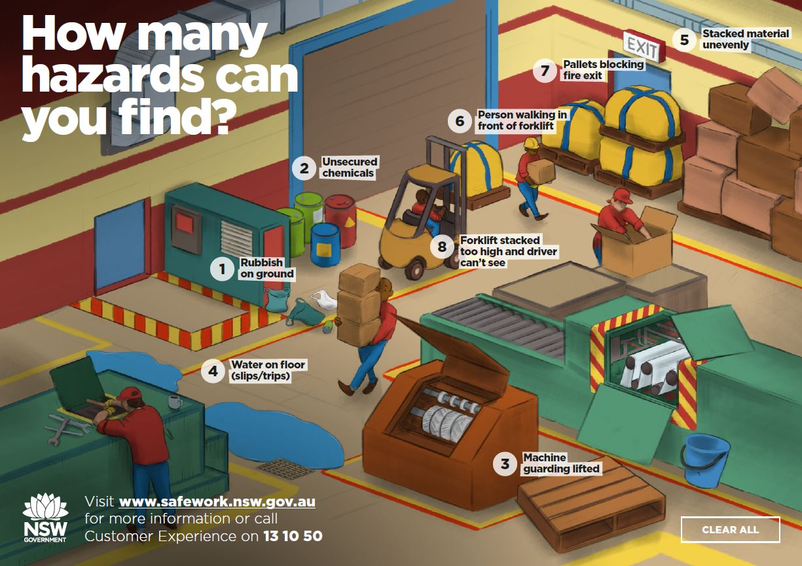
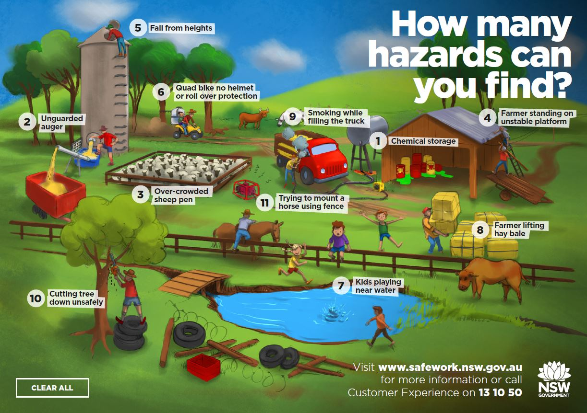
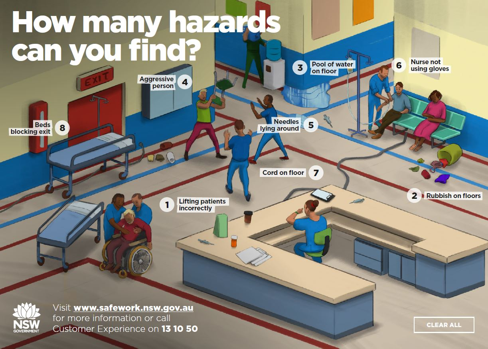
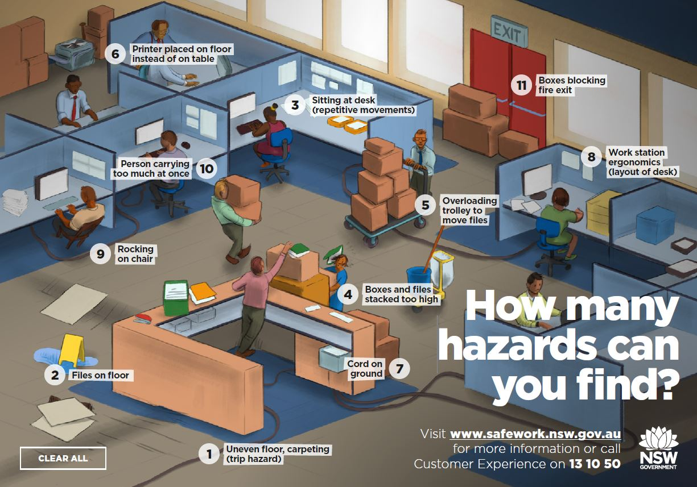
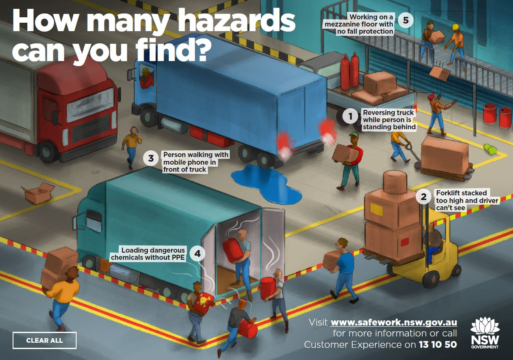

Scavenger Hunt Game Answers
Factory image shows these safety hazards:

- rubbish on ground
- unsecured chemicals
- a machine with guarding that's been lifted
- water on floor, which is a trip hazard
- pallets of material stacked unevenly against a wall
- a worker walking in front of a forklift
- pallets of goods blocking a fire exit
- a forklift being stacked to high and the driver being unable to see
Farm image shows these safety hazards:

- chemicals in a shed - unsafe chemical storage
- an unguarded auger
- an over-crowded sheep pen
- a farmer standing on an unstable platform to reach on top of a shed roof
- a person working at height at the top of a silo without fall protection - potentially falling from heights
- a person and child riding a quad bike without a helmet or roll over protection
- children playing near water
- a farmer lifting a hay bail that's too heavy
- a person smoking while refueling a truck
- a person cutting down a tree while standing on a stack of tires to get height
- a person mounting a horse by using a fence
Hospital image shows these safety hazards:

- workers lifting a patient incorrectly
- rubbish left on the floor
- pool of water on the floor - slip hazard
- workers approaching an aggressive person
- needles and medicine laying around
- nurse not using gloves
- cord on the floor
- bed blocking a fire exit
Office image shows these safety hazards:

- uneven floor / carpeting - trip hazard
- files one floor - trip hazard
- worker sitting at desks - repetitive movements
- boxes and files stacked too high
- overloaded trolley
- printer placed on the floor instead of on a table
- cord on the floor
- unsafe layout of desk
- worker rocking on chair
- workers carrying too much at once
- boxes blocking the fire exit
Truck Yard image shows these safety hazards:

- truck reversing while a worker is standing behind
- forklift stacked too high and driver cannot see.
- person walking in front of a truck while talking on his mobile
- workers loading dangerous chemicals without PPE
- working on a mezzanine floor with no fall protection